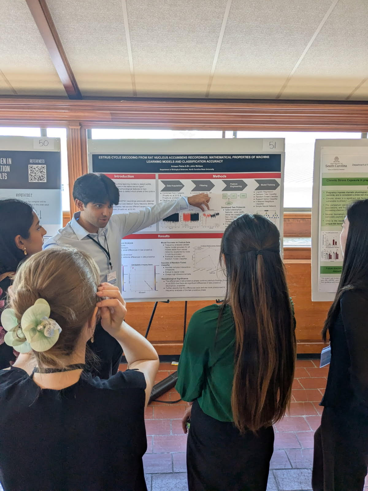
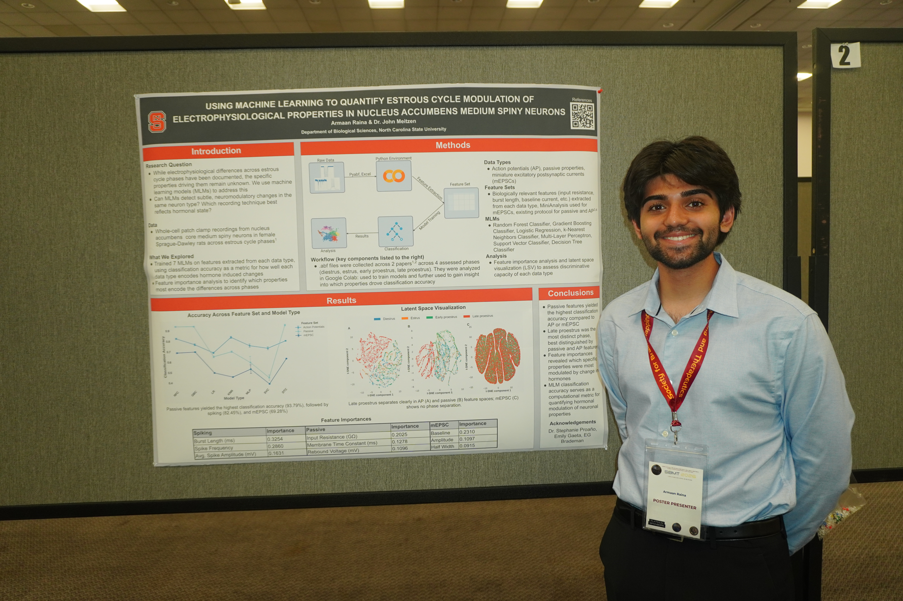
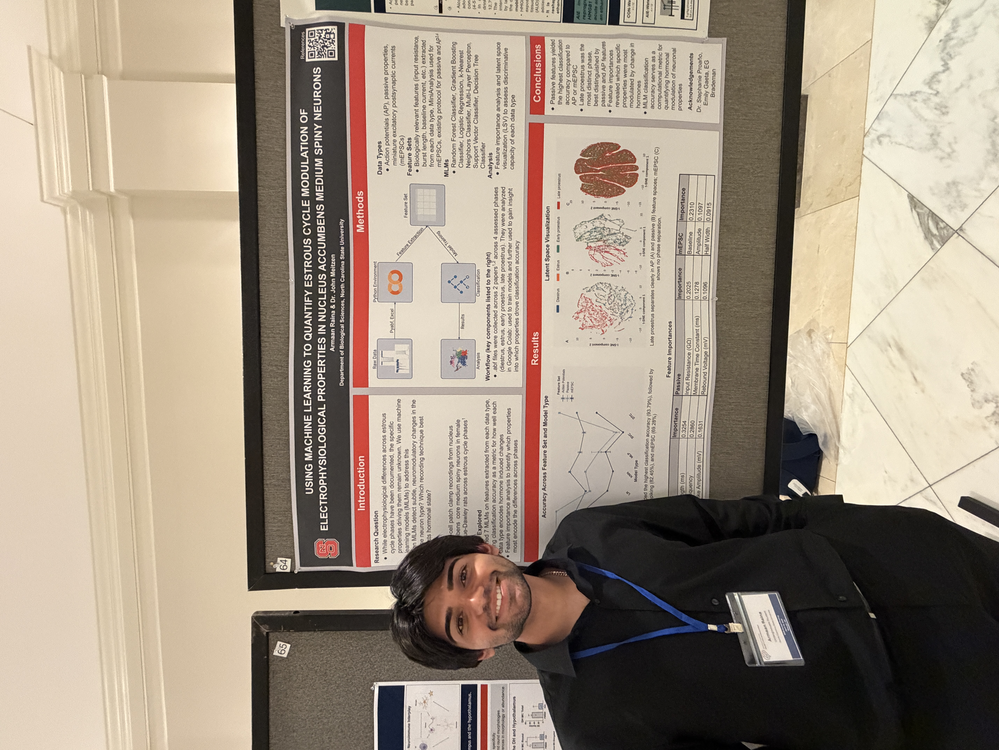
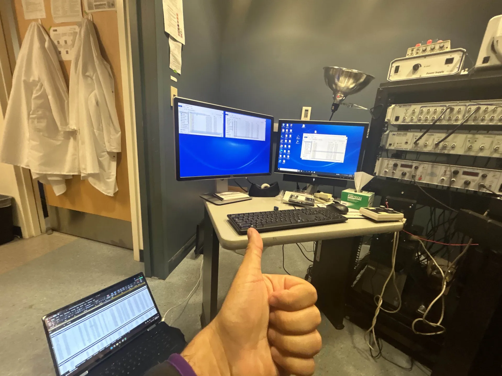

Overview
Using whole cell patch-clamp data recorded across four estrous phases from rats, I trained various machine learning models to classify phase based on biologically-relevant features extracted from different experimental paradigms, each of which capture a different aspect of neuronal function. Following this, I did a deep dive into model performance, ulimtately validating previous conclusions about electrophysiological trends across cycle phase and also suggesting previously undiscovered patterns in the data.
Publication
Taking the dataset I published in my first project (detailed below), I utilized various Python packages to import the data into Google Colab, make it usable, and filter it. A variety of biological signal types—each capturing different aspects of neuronal function—were explored. I then tested model accuracies of various models across features extracted from the different signal types, indicating which signal type encodes estrous cycle phase best.
This more broadly represents an exploration of how best to computationally represent small-scale neuromodulatory differences in cells within the brain. The work involved extensive data analysis, model tuning, and interpretation of results to understand which neurophysiological features best capture estrous cycle-dependent changes. The study was published earlier this year, check it out below!
Presentations
I've presented this work at three conferences (plus SfN 2026 later this year), receiving feedback and iterating on the study each time.



Open access dataset
As part of my first project in the Meitzen lab, I used a simple Python script to automate the merging of many Excel spreadsheets into a dataset with data from two papers, which I manually cleaned.
The resulting dataset served as the basis for my publication and remains open access for anyone to explore.
